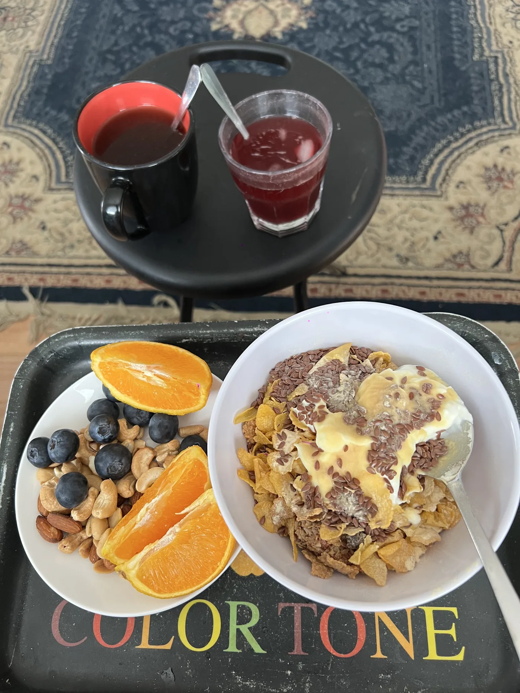
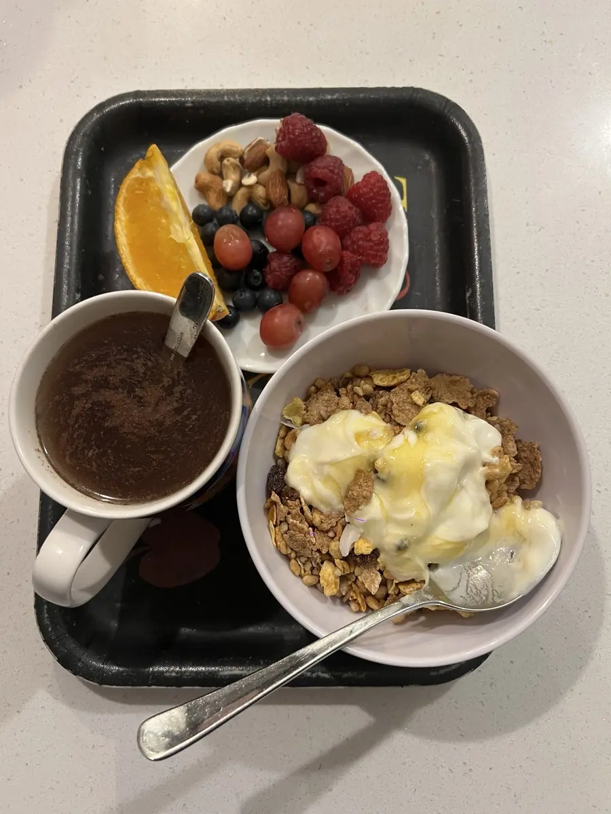
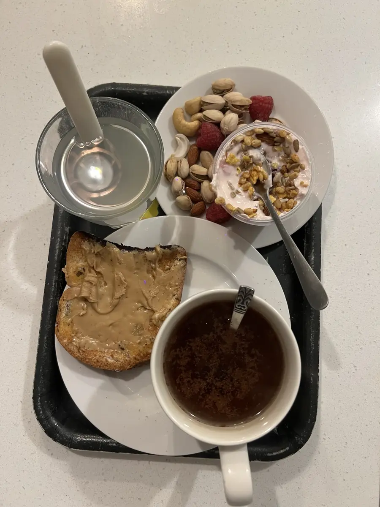
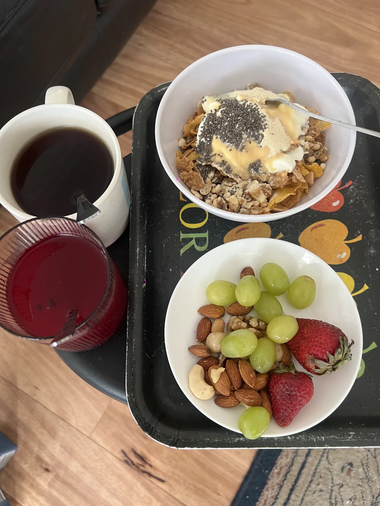

Keep it simple
The 4-part breakfast formula
Just like the simple plate I use for lunch and dinner, breakfast works best when it has a few basic building blocks. Pick one from each and you're done.
- Protein: Greek yoghurt, eggs, milk, cottage cheese, or nut butter on toast. This is what keeps you full.
- Fibre-rich carbs: oats, wholegrain cereal or muesli, or wholegrain or sourdough toast.
- Fruit: berries, orange slices, grapes, a banana. Whatever is in season and on hand.
- Healthy fats: a small handful of nuts, seeds, avocado or nut butter.
Add water and a warm drink, and you have a breakfast that sets the day up well.
Real breakfasts
What it looks like on my table
These are real breakfasts from my mornings, photographed before I ate them. You'll notice a pattern: a main bowl or toast, a side plate of fruit and nuts, and a hot drink.




Mix and match
10 easy healthy breakfast ideas
- Yoghurt bowl: Greek yoghurt, muesli, berries and a sprinkle of nuts.
- Overnight oats: oats soaked in milk overnight, topped with banana and cinnamon.
- Toast and nut butter: wholegrain toast, peanut butter, sliced banana or berries.
- Eggs on toast: two eggs any style, with tomato or spinach on the side.
- Cereal plus a fruit plate: a wholegrain cereal with milk, plus orange slices and a handful of nuts.
- Porridge: warm oats with grated apple, cinnamon and walnuts. Perfect for winter.
- Avocado toast: smashed avocado, a squeeze of lemon, and an egg or some feta.
- Cottage cheese and fruit: cottage cheese with pineapple or berries and a few seeds.
- Breakfast smoothie: milk or yoghurt, frozen berries, a banana and a spoon of oats.
- Leftovers: there's no rule against last night's dinner. Protein and veg in the morning works well.
Make it stick
Tips for keeping breakfast simple
- Keep a short rotation. Three or four go-to breakfasts remove the decision-making.
- Set up the night before. Bowls out, oats soaking, fruit washed.
- Use a tray or a plate. Sitting down to a proper breakfast makes you slow down and actually enjoy it.
- Don't chase perfection. A decent breakfast most days beats a perfect one once a week.
- Pair it with a quiet moment. Breakfast is a natural time for a short devotion or some gratitude before the day gets busy.
General information only. If you have specific dietary needs, allergies or a medical condition, please speak with your GP or an accredited practising dietitian.
Read next